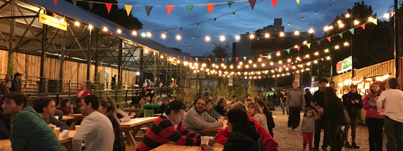

Dónde comer
En este buscador vas a poder filtrar por nombre, tipo de establecimiento y por barrio
Ver más
En este buscador vas a poder filtrar por nombre, tipo de establecimiento y por barrio
Ver másEn Buenos Aires vas a encontrar platos típicos y comida de todo el mundo
Ver más
Conoce los patios y mercados en donde podés disfrutar de la mejor gastronomía de la Ciudad
Ver más